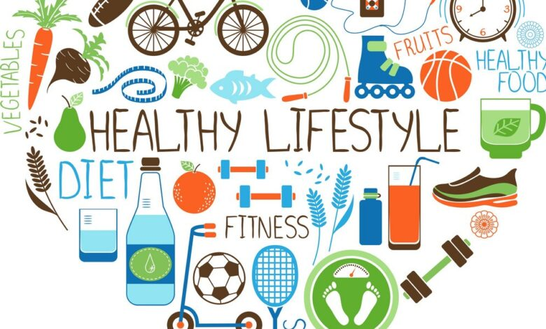

Wellness Guide
Workouts
Incorporating regular workouts into your routine is essential for maintaining physical health. Whether it's strength training, yoga, or cardio, find an activity that you enjoy and make it a part of your daily life.
- Strength Training: Build muscle with weights and resistance exercises.
- Yoga: Enhance flexibility and mental clarity.
- Cardio: Improve heart health with activities like running or cycling.
- HIIT: High-Intensity Interval Training for effective fat burning.
- Pilates: Focus on core strength and stability.
Lifestyles

A healthy lifestyle includes not just exercise, but also sleep, stress management, and positive relationships. Cultivate habits that promote mental clarity and emotional resilience to support your overall well-being.
- Sleep Hygiene: Aim for 7-9 hours of quality sleep each night.
- Mindfulness: Practice meditation or mindfulness to reduce stress.
- Social Connections: Nurture relationships for emotional support.
- Outdoor Activities: Spend time in nature to boost mood and energy.
- Digital Detox: Limit screen time to improve mental well-being.
Foods You Can Eat

Nutrition plays a vital role in wellness. Focus on incorporating whole foods like fruits, vegetables, lean proteins, and healthy fats into your diet. Meal planning can help you stay on track and make healthier choices.
- Fruits: Berries, apples, bananas for natural sweetness.
- Vegetables: Leafy greens, broccoli, and peppers for vitamins.
- Lean Proteins: Chicken, fish, beans, and legumes for muscle repair.
- Whole Grains: Quinoa, brown rice, and oats for sustained energy.
- Healthy Fats: Avocados, nuts, and olive oil for heart health.